钓鱼教程
渔业及钓鱼教程
想次肉类食品但不想杀生？那么做个渔夫吧，你将可以既次肉，又可以不打死动物们。

首先我们需要一把钓鱼必备的钓鱼竿
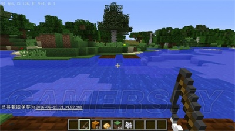
对准水面右键
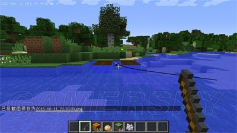
坐等鱼上钩，钩附近会不断有水点溅出，一会后会有一道波纹向钓鱼竿游去，只见鱼钩突然下沉！立刻右键收杆，否则鱼会跑掉。
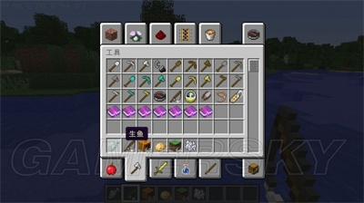
一般会钓到各种鱼
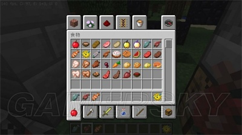
有生鱼，生鲑鱼。小丑鱼和河豚
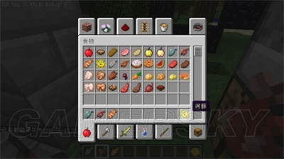
河豚是宝贵的酿造材料，但是绝对不要吃，你会后悔的
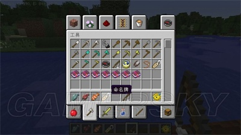
有时会钓到垃圾，例如腐肉，有时也会钓到宝贝，命名牌之后讲
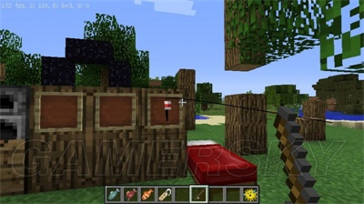
把将鱼钩扔到物品展示框会这样==奇葩
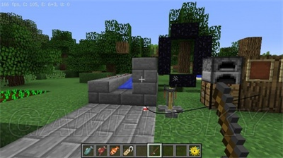
扔到别的方块上会立刻落下
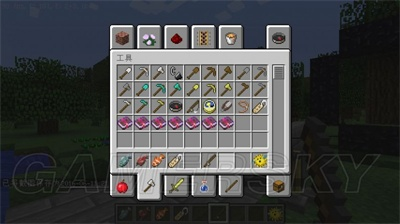
鱼竿有了没钩与有钩的状态
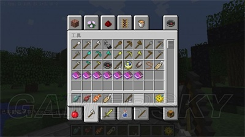 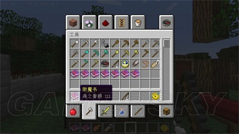
有两种附魔专门应用于钓鱼竿
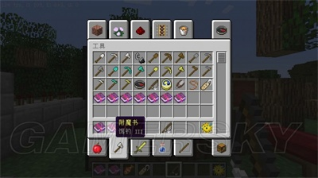 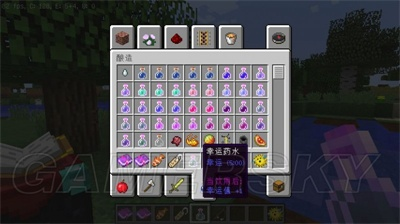
在末地城里有时会发现这个，很稀有却没啥太大的用处（严重透剧）
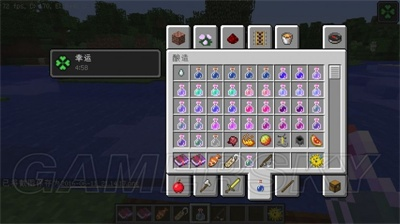
喝了之后提高钓到宝贝的几率
1.9加入的钓鱼竿的无钩/有钩的物品栏状态
海之眷顾：
降低获得垃圾的几率
每等级降低2.5%获得”垃圾”的几率并提升1%获得”宝藏”的几率
钓饵：
提高钓鱼的效率
每等级会减少5秒的等待时间。同时每等级降低1%获得”垃圾”或”宝藏”的几率。当等级超过8级时，永远不会上钩。但在pe版中（0.13.1），超过8级是可以上钩的，这是个特例。
耐久与经验修补也可以用于钓鱼竿。
在1.9以下，PVP中钓鱼竿也总有用处，例如把对方从平台打入虚空/地面从而导致死亡，尤其是空岛与起床战争。在1.9以及1.9以上，钓鱼竿没有击退与假伤害，因此一代PVP神器被bugjump毁了。
垃圾：
破损的钓鱼竿，碗，线，皮革，腐肉，木棍，皮革靴子，水瓶，骨头，墨囊，拌线钩（垃圾引用于wiki）
宝藏：
附魔的钓鱼竿，附魔的弓，附魔书，命名牌，鞍，睡莲